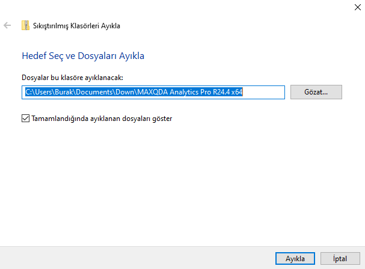
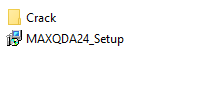
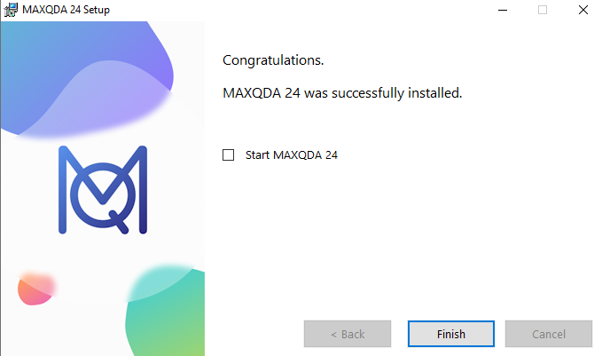
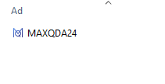
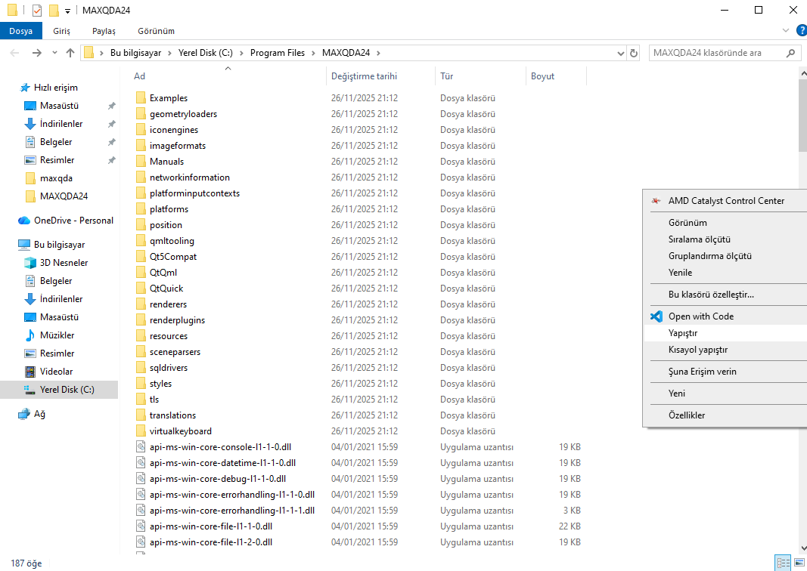
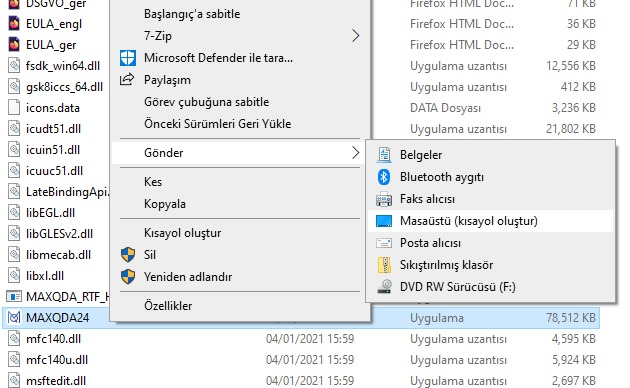
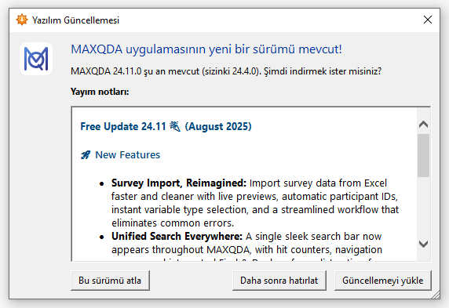
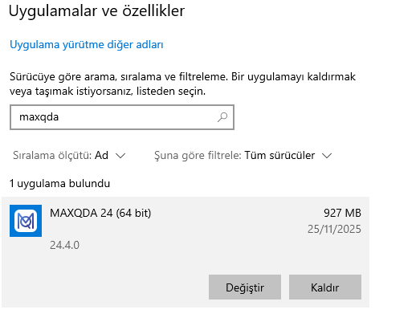
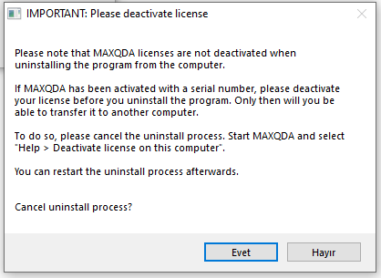

1. İndirme
İndir butonu ile MaxQDA için gerekli olan dosyayı indirebilirsiniz.
2. Dosya Çıkarma


Dosya indirildikten sonra İndirilenler klasöründe yer alan dosyayı sağ tıklayarak Tümünü Ayıkla butonu ile çıkartabilirsiniz.
3. Kurulum
MaxQDA24_Setup dosyasını çalıştırarak kuruluma başlayınız. Kurulumun son sayfasında "Start MaxQDA 24" işaretini kaldırınız, pencere aşağıdaki gibi olmalıdır.

4. Lisanslama
Google Drive'dan indirdiğiniz dosya içerisindeki Crack klasöründeki MaxQDA 24 dosyasını sağ tık ile kopyalayınız.

Masaüstünde oluşan MaxQDA 24 uygulamasına sağ tıklayarak "Dosya konumunu aç" butonuna basınız (Windows 11'de "Daha fazla seçenek" butonuna basmanız gerekebilir). Daha sonra uygulamayı masaüstünden siliniz.

Dosya konumunu açtıktan sonra sağdaki boş alana sağ tık ile yapıştırınız.

Yapıştırdıktan sonra MaxQDA 24'e sağ tıklayarak Gönder ile Masaüstüne kısayol gönderiniz. Windows 11'de "Daha fazla seçenek" butonuna basmanız gerekebilir.
5. Ana Sayfa

Dördüncü adım sonrasında oluşturduğunuz kısayol ile uygulamayı açalabilirsiniz ve new butonu ile yeni bir analiz oluşturabilirsiniz. Güncelleme önerdiğinde "Bu sürümü atla" diyebilirsiniz.

Ek-1
Windows arama işareti ile "Program ekle veya kaldır" yazarak açılan pencerede MaxQDA'yi bulunuz ve kaldır butonuna basınız.

Hayır butonuna basarak programın kaldırılmasına devam ediniz. Program kaldırıldıktan sonra sayfanın en başından yeni versiyon için yeni bir indirme linki ve uygulamayla başlayabilirsiniz.